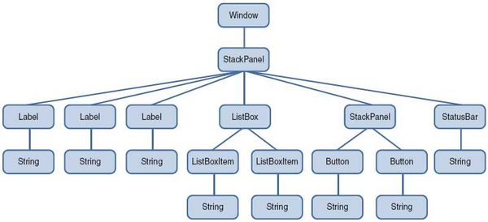
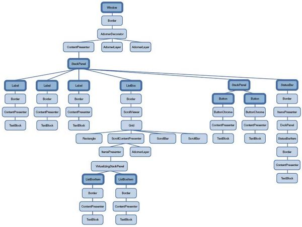

Element Tree Overview
The primary tree structure is the object tree. If you create an application page in XAML, then the tree structure is created based on the nesting relationships of the elements in the markup. If you create an application in code, then the tree structure is created based on how you assign property values for properties that implement the content model for a given object. There are really two ways that the object tree is processed and conceptualized: as the logical tree and as the visual tree. The distinctions between logical tree and visual tree are not always necessarily important, but they can occasionally cause issues with certain UI tasks and affect choices you make in markup or code.
Even though you do not always manipulate either the logical tree or the visual tree directly, understanding the concepts of how the trees interact is a way to understand how property inheritance and event routing works.
The Visual Tree
The visual tree is the core of all things rendering. The visual tree describes the structure of visual objects, as represented by the Visual base class. When you write a template for a control, you are defining or redefining the visual tree that applies for that control. The visual tree is also of interest to developers who want lower-level control over drawing for performance and optimization reasons. The visual tree affects all things visual, including input. For example, setting the opacity to 50% on a visual parent makes all its children 50% as well (if you also set the child's opacity to 50%, it is a cumulative 75% transparent). Similarly, setting a transform on the parent, transforms the child as well. Hit-testing goes through the visual tree. Disabling the parent (setting IsEnabled to false) disables visual descendents, etc. Another exposure of the visual tree as part of conventional application programming is that event routes for a routed event mostly travel along the visual tree, not the logical tree. This subtlety of routed event behavior might not be immediately apparent unless you are a control author. Routing events through the visual tree enables controls that implement composition at the visual level to handle events or create event setters.
Overriding the Visual Tree
Although visual tree concept is defined at Visual, the implementation of that tree is left to control authors. This means that each control decides how to store the visual children. For example, panels have their own collection of elements to store visual children; Decorator defines a single child property to store its visual child.
Visual defines two virtual methods that should be overriden by controls specific implementations to allow visual tree traversal:
virtual uint32_t GetVisualChildrenCount() const = 0;
virtual Visual* GetVisualChild(uint32_t index) const = 0;
For convenience the base class FrameworkElement defines default storage for a single visual child, mVisualChild, that inheritors could use to update visual child. It also defines a default implementation for previous methods based on mVisualChild content.
To define how a general object or content model adds or removes objects within the visual tree, controls authors have to use AddVisualChild(child) and RemoveVisualChild(child) methods, that update the parent-child relationship between objects in the visual tree, whenever the visual representation of the control changes.
Tree Traversal
The visual tree also supports a helper class for visual tree traversal, VisualTreeHelper. The visual tree is not exposed as conveniently through control-specific properties, so the VisualTreeHelper class is the recommended way to traverse the visual tree if that is necessary for your programming scenario.
The Logical Tree
In xaml, you add content to elements using properties. For example, you add items to a ListBox control using its Items property. By doing this, you are placing items into the ItemCollection of the ListBox control. To add objects to a DockPanel, you use its Children property. Here, you are adding objects to the UIElementCollection of the DockPanel. When you place list items in a ListBox or controls or other elements in a DockPanel, you also use the Items and Children properties, either explicitly or implicitly, as in the following example.
<DockPanel Name="ParentElement">
<!--implicit: <DockPanel.Children>-->
<ListBox DockPanel.Dock="Top">
<!--implicit: <ListBox.Items>-->
<ListBoxItem>
<TextBlock>Dog</TextBlock>
</ListBoxItem>
<ListBoxItem>
<TextBlock>Cat</TextBlock>
</ListBoxItem>
<ListBoxItem>
<TextBlock>Fish</TextBlock>
</ListBoxItem>
<!--implicit: </ListBox.Items>-->
</ListBox>
<Button Height="20" Width="100" DockPanel.Dock="Top">Buy a Pet</Button>
<!--implicit: </DockPanel.Children>-->
</DockPanel>
Note that the property element tags are not explicitly needed because the XAML reader infers the property elements when it creates the objects that create the executable's runtime object representation of the application. For more information about how XAML syntax maps to the created logical tree, and inferred syntax elements, see XAML Concepts.
The Purpose of the Logical Tree
The logical tree exists so that content models can readily iterate over their possible child objects, and so that content models can be extensible. Also, the logical tree provides a framework for certain notifications, such as when all objects in the logical tree are loaded.
In addition, resource references are resolved by looking upwards through the logical tree for Resources collections on the initial requesting object and then parent objects. The logical tree is used for resource lookup when both the logical tree and the visual tree are present. For more information on resources, see Resources.
Overriding the Logical Tree
Although content model is defined at FrameworkElement level, the implementation of that model is left to control authors. This means that each control decides how to store the content. For example, panels have their own collection of UIElements to store logical children; ContentControl defines the dependency property Content to store a single logical child.
FrameworkElement defines two virtual methods that should be overriden by controls specific implementations to allow logical tree traversal:
virtual uint32_t GetLogicalChildrenCount() const = 0;
virtual Ptr<BaseComponent> GetLogicalChild(uint32_t index) const = 0;
An element doesn't actually pick its logical parent; instead, a parent adopts children. For example, when you set a property value to the ContentControl.Content property, ContentControl takes that value as its logical child. To adopt a new logical child, an element simply calls AddLogicalChild. Similarly, to remove a logical child, an element calls RemoveLogicalChild. Note that you can't adopt a child that already has a logical parent.
Default controls already do the work to make the logical tree operate correctly. And actually it's more general than that - Panel, ItemsControl, ContentControl, and Decorator, which are the most common base classes, all do the work to make the logical tree operate already. For example, if you create a custom Button that subclasses ContentControl, your Content property will pick up your button as the logical parent without you doing anything.
Resources
Resource lookup for immediate resources (defined on the page, as opposed to application resources or resources from themes) traverses basically the logical tree. Objects that are not in the logical tree can reference resources, but the resource lookup sequence begins at the point where that object is connected to the logical tree. Only logical tree nodes can have a Resources property that contains a ResourceDictionary, therefore there is no benefit in traversing the visual tree looking for resources.
However, resource lookup can also extend beyond the immediate logical tree. For application markup, the resource lookup can then continue onward to application resources and to theme support and system values. Themes themselves can also reference system values outside of the theme logical tree if the resource references are dynamic.
Tree Traversal
The LogicalTreeHelper class provides the GetChildrenCount, GetChild, GetParent, and FindLogicalNode methods for logical tree traversal. In most cases, you should not have to traverse the logical tree of existing controls, because these controls almost always expose their logical child elements as a dedicated collection property that supports collection access such as Add, an indexer, and so on. Tree traversal is mainly a scenario that is used by control authors who choose not to derive from intended control patterns such as ItemsControl or Panel where collection properties are already defined, and who intend to provide their own collection property support.
Logical Tree Usage
Often, an element's logical parent is the same as its visual parent. This is the case with elements in a Panel, such as a Grid; the Panel.Children property is a UIElementCollection type, and UIElementCollection has a feature that all items get the Panel as both the logical parent and the visual parent. Other times, such as for the content of a Button (or any ContentControl), the two parents are different. The logical parent is relevant for several tree-based features:
- The Parent property. As I just said above, the FrameworkElement.Parent property returns the logical parent. So any ListBoxItem.Parent above returns the ListBox, and Button.Parent returns the DockPanel.
- Property inheritance. Inheritable properties, such as FontFamily and DataContext, come from an element's logical parent (or logical ancestor). The exception is that if an element has a visual parent but not a logical parent, the visual parent will be used.
- {DynamicResource} references. If a property has a {DynamicResource} set on it, it will search the .Resources of logical ancestors. Just like property inheritance, though, if there's only a visual parent, that link is followed instead.
- Name. When looking up a name, such as in {Binding ElementName=Foo}, the search walks up the ancestry looking for a name scope, again just as it does for inheritable properties.
- Routed events. When an event is routing up the tree, such as the MouseLeftButtonDownEvent, the event goes up both the visual parent and the logical parent, if they're different.
Example
<Window xmlns="http://schemas.microsoft.com/winfx/2006/xaml/presentation"
Title="Logical and Visual Trees Example" SizeToContent="WidthAndHeight"
Background="White">
<StackPanel>
<Label FontWeight="Bold" FontSize="20" Foreground="Red">
Hello World!
</Label>
<Label>A label</Label>
<Label>Another label</Label>
<ListBox>
<ListBoxItem>First item in the list</ListBoxItem>
<ListBoxItem>Second item</ListBoxItem>
</ListBox>
<StackPanel Orientation="Horizontal" HorizontalAlignment="Center">
<Button MinWidth="75" Margin="10">Help</Button>
<Button MinWidth="75" Margin="10">OK</Button>
</StackPanel>
<StatusBar>Good bye!</StatusBar>
</StackPanel>
</Window>
Next image shows the logical tree produced by the previous xaml.
The visual tree is basically an expansion of the logical tree, in which nodes are broken down into their core visual components. That visual representation depends on current UI theme and control styles. The following image shows a possible visual tree for the previous xaml.
